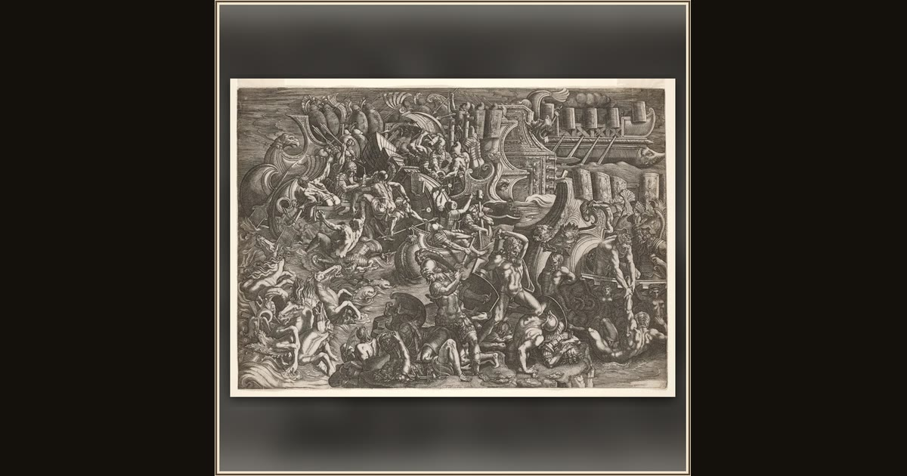

Trojans Repelling the Greeks
Giovanni Battista Scultori (Italian, 1503–1575), after Giulio Romano (Italian, 1499–1546) · 1538 · cma
Scultori shows a crowded battle beside ships, with armed men falling into the water; it recalls the Greeks' rout toward their ships after Hector breaks the gates (12.470). Explore its place in Homer's Iliad, Book XII, line 470.